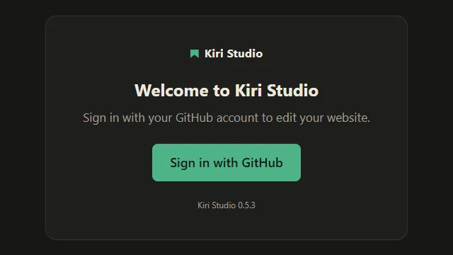
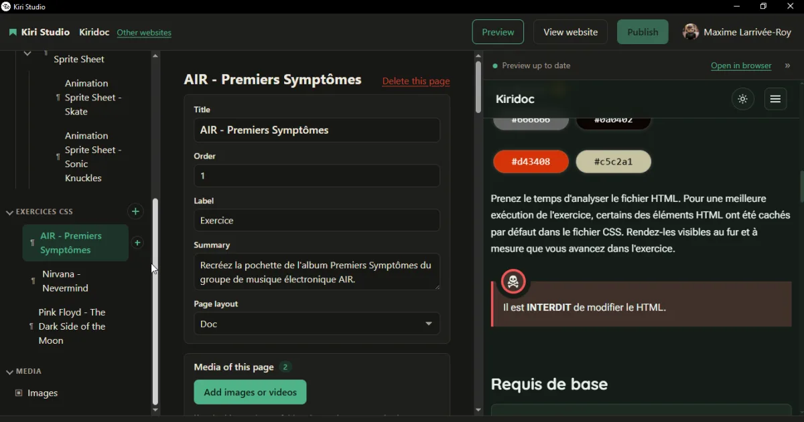
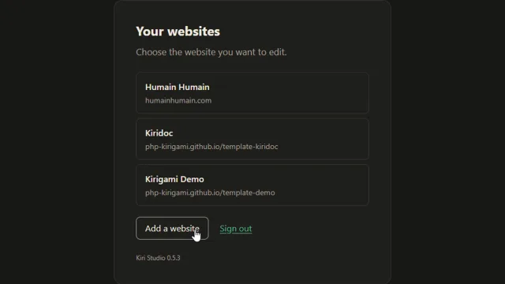
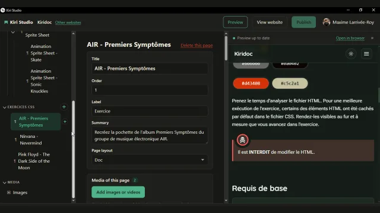
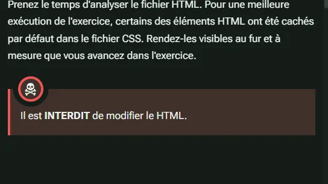
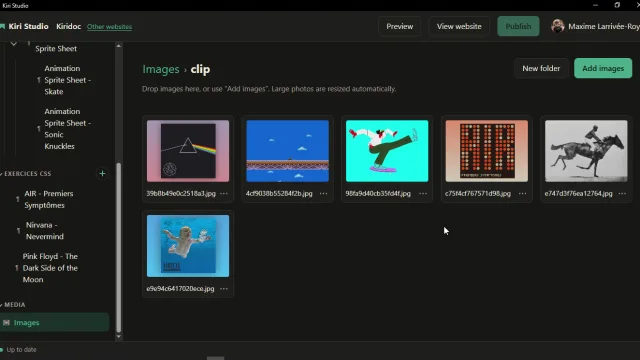
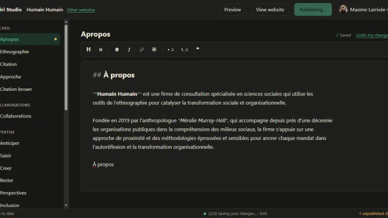
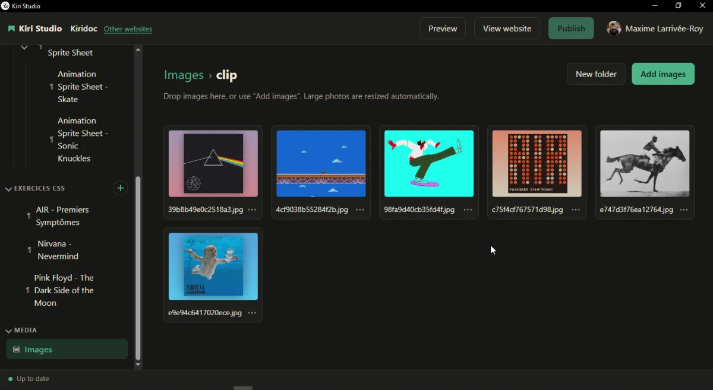

1Sign in once
One "Sign in with GitHub" button. The app opens the browser with the code already copied; the owner approves and never sees it again.
For the people the site is built for
Kiri Studio is a desktop app for site owners. They sign in with GitHub once, change their text, fill in forms, drop in pictures, watch the real page update, and click Publish.


1One "Sign in with GitHub" button. The app opens the browser with the code already copied; the owner approves and never sees it again.

2The site appears directly (a picker only shows for more than one), and keeps itself in sync while they read.

3Pages and sections are listed by their plain names: "Team", "Blog posts". Text goes in a Markdown editor, data in a form-like editor checked against a JSON Schema. There is no Save button: every change is kept as a draft.

4A live preview beside the editor renders the page with the site's own Kirigami engine, as it will look once online.

5Pictures and documents go in a manager. Big photos are resized for them, and each one can copy the code that inserts it into a page.

6One button. "Publishing…", then "Your site is online", with a link. The site's usual GitHub Pages workflow does the rest.
Markdown pages, with the page header (title, date, abstract, page layout) shown as a form above the text instead of raw tags.
YAML and JSON files, with schema-aware help and smart indentation. A file's schema is found the way VS Code finds it.
Drop pictures in; they are downscaled before they are committed. Copy or insert the Markdown for them, or set one as a page's image.
PDFs and other files go in a document manager, and audio and video play inside the app. Large files can go through Git LFS.
Add and delete posts or tree-shaped pages, with default header tags filled in for each new one.
Optionally, each page gets its own images, videos and downloads next to it, with a panel to manage them.

The maintainer controls it in the site's own kirigami.yaml, versioned with the site, not in the app. Without anything, the content that pages load and the site's images are editable; everything else stays out of sight.
studio:
files: src/documents # a document manager (PDF, …)
exclude: [src/features/data/_stats.json]
labels:
src/features/data/_articles.yaml: Articles
The build ignores that block, so a site works the same with or without Studio. Every key is documented in the configuration reference and in Kiri Studio for maintainers.
git binary, no repository on their disk.Kiri Studio is in early development. Source and releases: php-kirigami/kiri-studio.